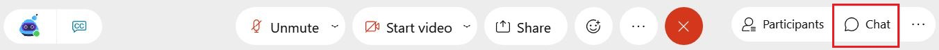
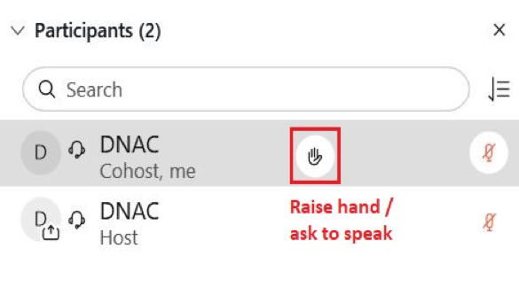

All Attendees Guidelines
1. Getting Started
Requirement: Webex & Whova
As you already know, you will be using Webex as the video conferencing platform in order to participate in the Virtual Conference. Webex session could be joined via browsers, but we recommend you to install the application, if you haven’t yet installed, you will be prompted to install it the first time you enter a session.
2. Finding your session
In order to access the session, you need to have a Whova account.
- Connect to the Web App CNSM2021 Whova Web App
- Go to the Whova Program page and click on View Session for the session type you are interested in (e.g. Keynotes, Technical Sessions, etc.), the program page can also be accessed from the main menu of the IFIP website, you can also add session to your calendar.
- Click on View Live Stream to access the Webex room, each session will have a single Webex meet.
- Sub sessions are created for each paper, all sub sessions share the same Webex room of their main parent session (e.g. TS1, TS2, …).
- Enter the webinar room in Webex
- Enjoy!
A Youtube  video here is a guide.
video here is a guide.
3. Webex Menu
- Please mute your microphone when entering the room.
- Ask questions in the Chat or the Q & A Chat first. To access these chats, click on the chat icon located at the bottom of the screen.

- You can also ask to speak by clicking on the button to "Raise your hand"

If you haven’t had the chance to ask your question during the session Webex, there will be a dedicated Q&A channel for the session in the Whova application (mobile and web), this channel will be moderated by the respective Session Chairs and will be available during all the conference, so don’t worry !